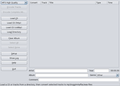

jRipper
Dieser Artikel wurde für die folgenden Ubuntu-Versionen getestet:
Ubuntu 16.04 Xenial Xerus
Ubuntu 14.04 Trusty Tahr
Zum Verständnis dieses Artikels sind folgende Seiten hilfreich:
jRipper  ist ein älteres, auf Java basierendes Programm. Es extrahiert Audio-CDs und kann zwischen den Formaten MP3, AAC (M4A), OGG, FLAC und WAV konvertieren. Es verwendet zum Extrahieren der CDs Cdda2Wav , Parameter zum Auslesen und Kodieren lassen sich über vorgefertigte Templates einstellen. Zusätzlich unterstützt jRipper CD-Abfragen per FreeDB.
ist ein älteres, auf Java basierendes Programm. Es extrahiert Audio-CDs und kann zwischen den Formaten MP3, AAC (M4A), OGG, FLAC und WAV konvertieren. Es verwendet zum Extrahieren der CDs Cdda2Wav , Parameter zum Auslesen und Kodieren lassen sich über vorgefertigte Templates einstellen. Zusätzlich unterstützt jRipper CD-Abfragen per FreeDB.
Die Programmsprache ist Englisch.
Installation¶
|  |
| jRipper |
Voraussetzungen¶
Eine installierte Java-Laufzeitumgebung (JRE). Des Weiteren müssen folgende Pakete installiert [1] werden:
icedax (universe, zum Auslesen der CD)
vorbis-tools (für OGG)
lame (universe, für MP3)
faac (multiverse, für AAC (M4A))
faad (universe, für AAC (M4A))
flac (für FLAC)
 mit apturl
mit apturl
Paketliste zum Kopieren:
sudo apt-get install icedax vorbis-tools lame faac faad flac
sudo aptitude install icedax vorbis-tools lame faac faad flac
Download¶
Das Programm kann als jripper_1_02_1.jar  heruntergeladen werden.
heruntergeladen werden.
Hinweis!
Fremdsoftware kann das System gefährden.
Der Programmstart erfolgt in einem Terminal-Fenster [2] mit dem Befehl:
java -jar jripper_1_02_1.jar
Integration ins System¶
Programme, die an der Paketverwaltung vorbei installiert werden, sollten nach /opt kopiert werden. Dort legt man ein Verzeichnis /opt/jRipper an und kopiert die .jar-Datei in diesen Ordner. Für beide Schritte werden Root-Rechte [3] benötigt.
Startskript¶
Um das Programm bequemer starten zu können, fehlt noch ein kleines Startskript. Man erstellt daher mit einem Editor [4] und Root-Rechten [3] die Datei /usr/local/bin/jripper mit dem folgenden Inhalt:
#!/bin/bash java -jar /opt/jRipper/jripper_1_02_1.jar
und macht diese ausführbar [5]. In einem Terminal kann jetzt jRipper mit dem Befehl
jripper
gestartet [6] werden.
Konfiguration¶
Nach dem Start sollte unter "Setup -> General Options -> Music Folder" der Pfad zum Ordner angegeben werden, in dem die von CD gerippte Musik abgelegt werden soll. Alle anderen Einstellungen sind weitestgehend selbsterklärend.
Bedienung¶
Das Programm ist recht intuitiv, daher hier nur eine kurze Erläuterung zur Bedienung.
| jRipper | |
| Reiter | Beschreibung |
| "MP3 High Quality" | Zielformat (kann geändert werden) |
| Schaltfläche | Beschreibung |
| "Encode Tracks" | Startet den Konvertiervorgang der ausgewählten Tracks |
| "Encode Complete Album" | Konvertiert alle Tracks von der CD |
| "Load CD" | Lädt die Tracks der CD |
| "Load CD (http)" | Lädt die Track-Namen der CD von FreeDB per HTTP-Protocol |
| "Load CD (cddbp)" | Lädt die Track-Namen der CD von FreeDB per CDDBP-Protocol |
| "Load Directory" | Lädt die Tracks aus einem lokalen Verzeichnis |
| "Clear Album" | Leert das Fenster mit der Track-Tabelle |
| "Select All" | Markiert alle Tracks in der Track-Tabelle |
| "Select None" | Hebt alle Markierungen in der Track-Tabelle auf |
| "Setup" | Zum Verändern der jRipper-Einstellungen |
| "Show Log" | Öffnet ein Log-Fenster |
| "Help" | Öffnet ein Hilfe-Fenster |
| "Quit" | Beendet jRipper |
Problembehebung¶
Das Programm enthält in der Version jripper-1.02.jar einen kleinen Fehler: Die Einträge in den Programmpunkten "Setup -> FreeDB Settings" und "Setup -> Program Paths" sind vertauscht. Unter "Setup -> FreeDB Settings" stehen also die Programme, auf die jRipper zugreift und unter "Setup -> Program Paths" steht der FREEDB-Server, auf den jRipper zugreift.
Sollte man zum Abrufen der Titelinformationen eine andere Internetdatenbank als freedb.org eintragen, so sollte man jRipper anschließend beenden und neu starten, damit die Änderungen übernommen werden.
 Übersichtsartikel
Übersichtsartikel- Erstellt mit Inyoka
-
 2004 – 2017 ubuntuusers.de • Einige Rechte vorbehalten
2004 – 2017 ubuntuusers.de • Einige Rechte vorbehalten
Lizenz • Kontakt • Datenschutz • Impressum • Serverstatus -
Serverhousing gespendet von